Park straddles the ridgeline of the Great Smoky Mountains, part of the Blue Ridge Mountains, which are a division of the larger Appalachian Mountain chain and contains some of the highest mountains in eastern North America
General Information
Parking tags are required for vehicles parked longer than 15 minutes.
How to Get There
From Gatlinburg, TN: Enter the park via the Sugarlands Visitor Center on US-441 (Newfound Gap Road), one of the primary gateways to Great Smoky Mountains National Park and its scenic drives, trailheads, waterfalls, and overlooks.
Overview
Great Smoky Mountains National Park straddles the border of Tennessee and North Carolina along the ridgeline of the Great Smoky Mountains, part of the Appalachian chain, and is the most visited national park in the United States, drawing more than 12 million visitors a year. Its mountains, including 16 peaks over 6,000 feet, are covered in a blue haze that gives the range its name, and its forests of more than 100 species of trees, waterfalls, and streams support an estimated 19,000 documented species of plants and animals, with thousands more yet to be discovered. The park is often called the salamander capital of the world.
Congress chartered the park in 1934, and President Franklin D. Roosevelt dedicated it in 1940 at Newfound Gap. It was the first national park funded in part with federal money, with significant donations from individuals and from John D. Rockefeller Jr. UNESCO named it a World Heritage Site in 1983. It is popular because of its beauty, its free entrance, its accessibility from major cities in the Southeast, and its variety of activities. People come to hike to waterfalls, look for black bears, drive scenic roads, see spring wildflowers and fall colors, and explore preserved pioneer settlements.
Park Sections
The park has many distinct areas. On the Tennessee side, Gatlinburg is the main gateway, with the Sugarlands Visitor Center, the Roaring Fork Motor Nature Trail, and trailheads for popular hikes like Alum Cave and Rainbow Falls. Cades Cove, in the west, is a broad valley with preserved cabins and churches and an 11-mile loop road, reached by Townsend. Elkmont is a historic resort community with a campground. On the North Carolina side, the Oconaluftee area near Cherokee has a visitor center and the Mountain Farm Museum, and Cataloochee Valley, a remote valley with historic buildings and elk, is reached by a narrow mountain road. Newfound Gap Road (US-441) crosses the park between Gatlinburg and Cherokee.
Sightseeing and Exploring the Park
The park's main scenic drive is Newfound Gap Road, a 33-mile route that climbs from Gatlinburg to Newfound Gap, at 5,046 feet, and descends to Cherokee, with overlooks along the way. A side road leads to Clingmans Dome, the highest point in the park at 6,643 feet, with a half-mile paved trail to an observation tower. The 11-mile loop through Cades Cove is the most popular drive and is the best place to see deer, turkeys, and bears, though traffic can be heavy. The 5.5-mile one-way Roaring Fork Motor Nature Trail passes old homesteads and a mountain stream. Allow extra time on all roads.
Hiking
The park has more than 850 miles of trails, including 70 miles of the Appalachian Trail. Easy hikes include Laurel Falls (about 2.6 miles round trip on a paved path), Cove Hardwood Nature Trail, and the walk to Grotto Falls. Abrams Falls and Rainbow Falls are moderate hikes of 5 miles or more. More strenuous options include the Alum Cave Trail to Mount LeConte, one of the park's most popular hikes, and Charlies Bunion from Newfound Gap. The Appalachian Trail crosses the park from end to end, and many backpackers hike sections of it.
Other Activities
Beyond sightseeing and hiking, the park is known for fly fishing, horseback riding from stables at Cades Cove and Smokemont, bicycling in Cades Cove, camping, ranger programs, and the synchronous fireflies at Elkmont, which light up together for a few weeks in late May and early June and require a lottery for viewing. The surrounding towns add attractions: Gatlinburg has an aerial tramway and Ober Gatlinburg, Pigeon Forge has Dollywood, and Cherokee has the Museum of the Cherokee Indian. Tubing on the river in Townsend is a popular summer activity.
Flora and Wildlife
The park is home to about 1,900 black bears, among the densest populations in the East, and elk that were reintroduced in Cataloochee and Oconaluftee. White-tailed deer, wild turkeys, groundhogs, and many birds are common, and the park has more than 30 species of salamanders. Plants include old-growth forests, spring wildflowers that bloom from March through May, rhododendron and mountain laurel in early summer, and brilliant fall color in October. Viewing is on your own. Bears should never be fed or approached, and park rules require a safe distance of at least 50 yards.
Access
The park is reached from many directions. The most popular entrance is from Gatlinburg, on US-441, about 40 miles southeast of Knoxville (45 to 60 minutes), and Townsend, on US-321, is the gateway to Cades Cove. The North Carolina entrance is at Cherokee, about 50 miles west of Asheville (roughly 1.25 hours). Knoxville's McGhee Tyson Airport and Asheville Regional Airport are the nearest major airports. Atlanta is about 3.5 hours away and Nashville about 4 hours. Most visitors drive, and there is no entrance fee, though a parking tag is required in the park.
Seasons
Every season has its draw. Spring brings wildflowers and waterfalls, summer is warm and busy with afternoon thunderstorms and a hazy view, and fall is the busiest season, with colorful foliage from mid-October and heavy traffic. Winter is quiet, with cold temperatures at elevation and occasional snow; Newfound Gap Road and other mountain roads can close for snow or ice, and Clingmans Dome Road closes from December through March. Cades Cove Loop Road is closed to cars on Wednesday mornings in spring and summer for cycling and walking. Check the National Park Service website for road closures.
Camping and Lodging
The park has nine developed campgrounds, including Elkmont, Cades Cove, Smokemont, Cosby, Deep Creek, Balsam Mountain, and Cataloochee, and many accept reservations on Recreation.gov. Backcountry camping requires a permit. The only lodging inside the park is LeConte Lodge, a hike-in lodge near the summit of Mount LeConte, reached by trail only and reserved far in advance. Nearby, Gatlinburg and Pigeon Forge have hundreds of hotels, cabins, and condos, Townsend has quieter inns and cabins, and Cherokee, Bryson City, and Maggie Valley serve the North Carolina side. Knoxville and Asheville are each about an hour away.
Visitor Centers
The park has several visitor centers. Sugarlands Visitor Center, near Gatlinburg, is the main one, with exhibits, a film, a bookstore, and information. The Oconaluftee Visitor Center near Cherokee has similar services and is next to the Mountain Farm Museum, where elk are often seen. The Cades Cove Visitor Center is at the midpoint of the loop road and has a historic grist mill nearby, and the Clingmans Dome Visitor Center is open in season. Hours vary by season, so check the National Park Service website.
This article uses material from the Wikipedia article "Great Smoky Mountains National Park", which is released under the Creative Commons Attribution-Share-Alike License 3.0. Additional information comes from the National Park Service Great Smoky Mountains National Park website.
Featured Locations and Trails
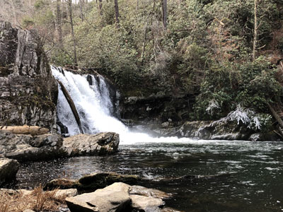
Great Smoky Mountains National Park from Gatlinburg, Public domain, via Wikimedia Commons; Image Size Adjusted
Abrams Falls Trail
Trail that runs parallel to Abrams Creek and passes Abrams Falls, one of the most voluminous waterfalls in the national park
Trail that runs parallel to Abrams Creek and passes Abrams Falls, one of the most voluminous waterfalls in the national park
Alum Cave Trail
Shortest and steepest of the five trails leading to the Le Conte massif, which contains four separate peaks in all, the highest of which has an elevation of 6,593 feet
Shortest and steepest of the five trails leading to the Le Conte massif, which contains four separate peaks in all, the highest of which has an elevation of 6,593 feet
Cades Cove
Single most popular destination for visitors to the park, attracting visitors for its well preserved homesteads, scenic mountain views, and abundant display of wildlife
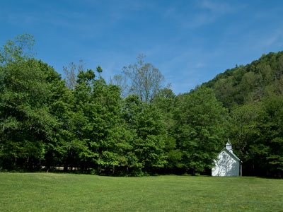
Ken Thomas, Public domain, via Wikimedia Commons; Image Size Adjusted
Cataloochee
Historic mountain valley featuring preserved homesteads, abundant wildlife viewing opportunities, scenic drives, hiking trails, and one of the largest elk populations in the southeastern United States.
Cataract Falls
Series of cascading waterfalls connected by scenic overlooks, a historic covered bridge, and short walking paths that showcase the largest waterfall by volume in Indiana.
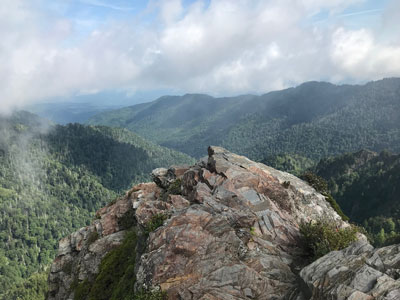
Great Smoky Mountains National Park from Gatlinburg, Public domain, via Wikimedia Commons; Image Size Adjusted
Charlies Bunion
Rocky mountain overlook reached by a scenic Appalachian Trail hike that features panoramic views, high-elevation forests, and dramatic cliffside scenery.
Rocky mountain overlook reached by a scenic Appalachian Trail hike that features panoramic views, high-elevation forests, and dramatic cliffside scenery.
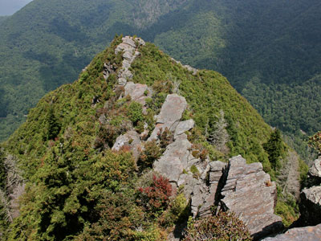
hakkun, CC BY-SA 3.0, via Wikimedia Commons; Image Size Adjusted
Chimney Tops Trail
4,724 feet, double-capstone knob on the eastern slope of the Sugarland Mountain massif, which stretches north-south across the north-central section of the Smokies
4,724 feet, double-capstone knob on the eastern slope of the Sugarland Mountain massif, which stretches north-south across the north-central section of the Smokies
Clingmans Dome Trail
At an elevation of 6,643 feet (2,025 m), it is the highest mountain in the Great Smoky Mountains National Park, the highest point in the state of Tennessee, and the highest point along the 2,192-mile (3,528 km) Appalachian Trail
At an elevation of 6,643 feet (2,025 m), it is the highest mountain in the Great Smoky Mountains National Park, the highest point in the state of Tennessee, and the highest point along the 2,192-mile (3,528 km) Appalachian Trail
Cove Hardwood Nature Trail
Short interpretive forest loop featuring old-growth hardwoods, seasonal wildflowers, streamside scenery, and one of the most biologically diverse woodland ecosystems in North America.
Short interpretive forest loop featuring old-growth hardwoods, seasonal wildflowers, streamside scenery, and one of the most biologically diverse woodland ecosystems in North America.
Grotto Falls
Popular waterfall destination featuring a forested hiking trail, stream crossings, old-growth woodland, and the rare opportunity to walk behind a cascading waterfall.
Popular waterfall destination featuring a forested hiking trail, stream crossings, old-growth woodland, and the rare opportunity to walk behind a cascading waterfall.

Laurel Falls Trail
Trail leading to Laurel Falls, one of the most popular waterfalls in the national park, and to the summit of Cove Mountain and the Cove Mountain fire tower
Trail leading to Laurel Falls, one of the most popular waterfalls in the national park, and to the summit of Cove Mountain and the Cove Mountain fire tower
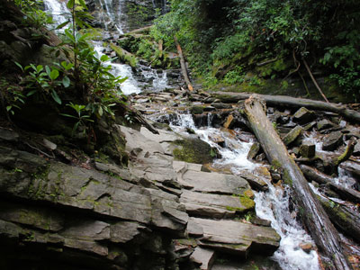
hakkun, CC BY-SA 3.0, via Wikimedia Commons; Image Size Adjusted
Mingo Falls
Tall cascading waterfall accessible by a short but steep forest trail that leads to a viewing bridge at the base of the falls.
Tall cascading waterfall accessible by a short but steep forest trail that leads to a viewing bridge at the base of the falls.
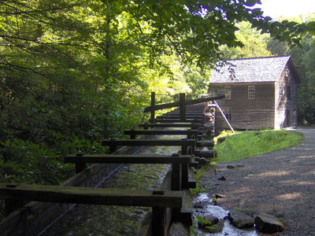
I, Brian Stansberry, CC BY-SA 3.0, via Wikimedia Commons; Image Size Adjusted
Mingus Mill
Historic water-powered gristmill dating to 1886 that demonstrates traditional corn-grinding methods using a turbine-driven milling system.
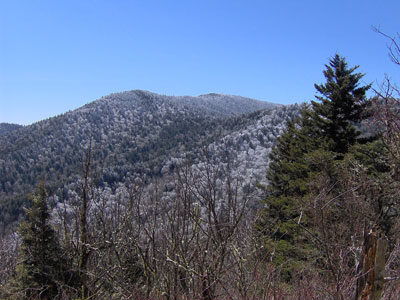
I, Brian Stansberry, CC BY-SA 3.0, via Wikimedia Commons; Image Size Adjusted
Mount Guyot
Remote high-elevation mountain featuring old-growth spruce-fir forest, backcountry hiking opportunities, and one of the highest summits in the eastern United States.
Remote high-elevation mountain featuring old-growth spruce-fir forest, backcountry hiking opportunities, and one of the highest summits in the eastern United States.
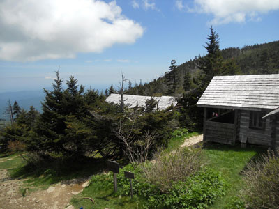
Great Smoky Mountains National Park from Gatlinburg, Public domain, via Wikimedia Commons; Image Size Adjusted
Mount Le Conte
Prominent mountain summit offering panoramic views, high-elevation forests, historic lodging, and access to one of the highest peaks in the eastern United States.
Prominent mountain summit offering panoramic views, high-elevation forests, historic lodging, and access to one of the highest peaks in the eastern United States.
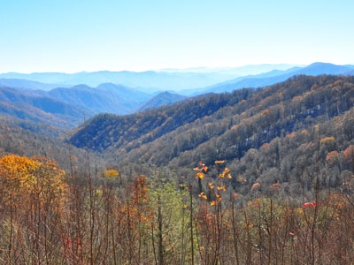
Washuotaku, CC BY-SA 4.0, via Wikimedia Commons; Image Size Adjusted
Newfound Gap
High-elevation mountain pass featuring panoramic views, access to the Appalachian Trail, and a historic memorial marking the dedication of the national park.
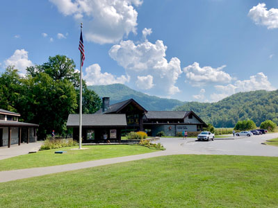
Warren LeMay from Cullowhee, NC, United States, CC0, via Wikimedia Commons; Image Size Adjusted
Oconaluftee
Visitor center and cultural area featuring historic farm structures, museum exhibits, wildlife viewing opportunities, and access to riverside walking trails.

Blinutne, CC BY-SA 3.0, via Wikimedia Commons; Image Size Adjusted
Rainbow Falls Trail
Forest hiking trail leading to the tallest single-drop waterfall in the national park, featuring scenic creek views, old-growth trees, and an 80-foot cascade.
Forest hiking trail leading to the tallest single-drop waterfall in the national park, featuring scenic creek views, old-growth trees, and an 80-foot cascade.
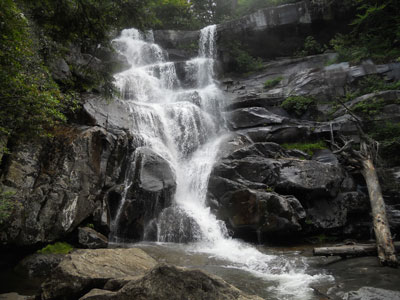
Great Smoky Mountains National Park from Gatlinburg, Public domain, via Wikimedia Commons; Image Size Adjusted
Ramsey Cascades Trail
Strenuous waterfall hike passing through old-growth forest, mountain streams, and rich cove hardwood habitat before reaching the tallest waterfall in the national park.
Strenuous waterfall hike passing through old-growth forest, mountain streams, and rich cove hardwood habitat before reaching the tallest waterfall in the national park.

Roaring Fork Motor Nature Trail
Scenic one way paved loop featuring mountain streams, waterfalls, historic log cabins, and dense old growth forest views along a winding roadway.
The Sinks
Roadside waterfall and river gorge featuring powerful whitewater, dramatic rock formations, and a popular scenic overlook along a mountain drive.
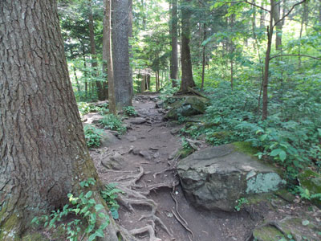
Evan Nichols (Virtua…, CC BY 3.0, via Wikimedia Commons; Image Size Adjusted
Trillium Gap Trail
Mountain trail featuring old-growth forest, a walk-behind waterfall, spring wildflower displays, and a scenic route to one of the highest summits in the Smokies.
Mountain trail featuring old-growth forest, a walk-behind waterfall, spring wildflower displays, and a scenic route to one of the highest summits in the Smokies.


.jpg){kind=link}

.jpg){kind=link}
.jpg){kind=link}
.jpg){kind=link}


.jpg){kind=link}

.jpg){kind=link}

.jpg){kind=link}